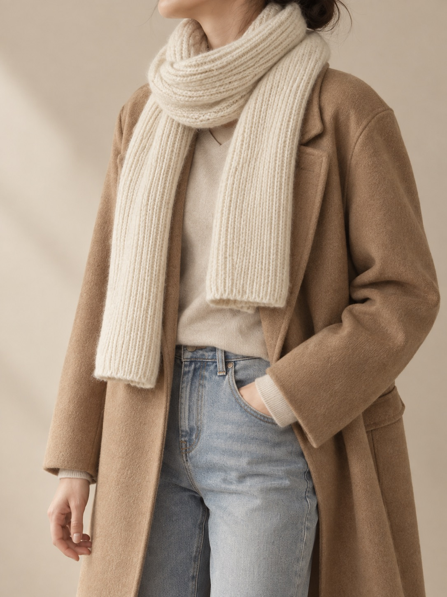
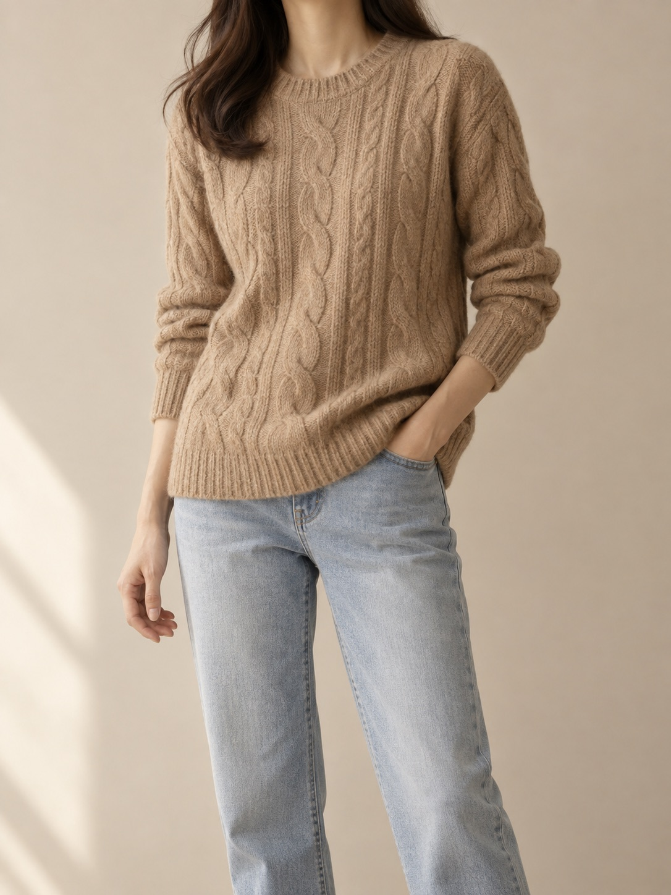
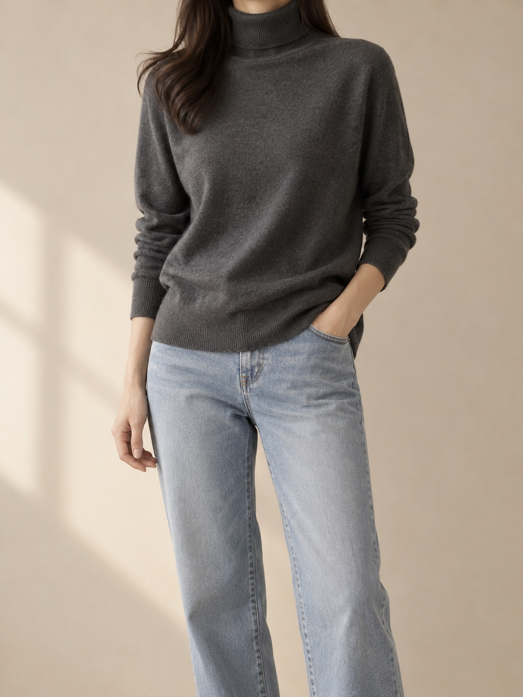

걸스라미는 기획부터 생산까지 직접 관리하는 국내 생산 여성 니트 브랜드입니다. 직접 생산하여 불필요한 유통 거품을 줄이고, 소매 고객에게 직접 보냅니다.



사입 쇼핑몰은 완성된 옷을 골라 팝니다. 저희는 원사를 고르는 순간부터 관여합니다. 그래서 "이 원사는 까슬거릴 수 있으니 이너를 입으세요" 같은 말을 상세페이지에 먼저 적어둘 수 있습니다.
울, 알파카, 리싸이클 원사를 계절과 용도에 맞게 고릅니다. 촉감과 보풀 정도를 먼저 시험합니다.
앞판, 뒤판, 소매를 짭니다. 같은 로트의 원사로 색을 맞춥니다.
편직된 판을 이어 붙입니다. 단추와 지퍼는 마감 상태를 한 장씩 확인합니다.
수축과 촉감을 안정시키는 워싱 후 자연 건조합니다.
치수(1~3cm 허용), 색상, 마감을 확인하고 소매 전용 재고로 옮겨 당일 출고합니다.
스마트스토어 5년 동안 받은 리뷰와 문의를 읽고 정했습니다.
"베이지(RM277)" 같은 도매 품번을 옵션명에서 지우고, 색상은 정식 이름으로 부릅니다.
크롭이 짧다, 팔 둘레가 작다는 말에 레귤러 기장과 L(66~77) 사이즈를 만들었습니다.
실제 상품 사진과 실측을 확인해 표시합니다. 교환 조건은 스마트스토어 상품 안내에서 확인해 주세요.
상품별 출고 예정일과 배송 조건은 스마트스토어에서 확인할 수 있도록 안내합니다.
1점 리뷰일수록 먼저 답합니다. 원인과 바꾼 점을 적습니다.
일상에서 자주 입을 수 있는 디자인과 컬러를 고르고, 상품마다 소재와 핏을 살펴 안내합니다.
새 상품과 판매 소식은 스마트스토어에서 확인해 주세요.